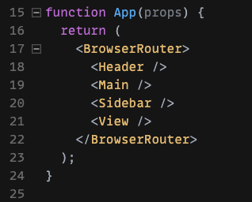
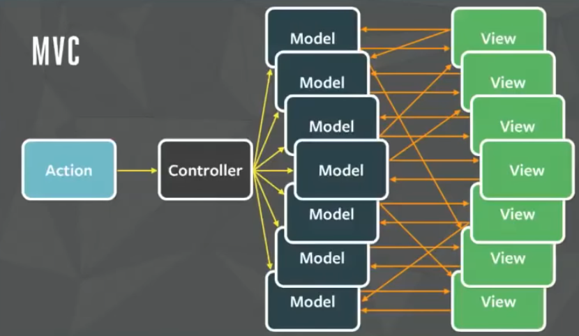

Why Frameworks?
- Automate the repetitive stuff
- Convention over Configuration
- Make doing the right things easy
- Consistent Contributions on a Dev Team
MCC: Section 3
UX: User Experience ⟺ DX: Developer Experience
UX vs. DX?
OR
UX and DX
React's syntax for defining View templates
function MyComponent (props) {
const defaultName = 'Buddy'
const handleClick = e => console.log(e)
return (
<div onClick={handleClick}>
<h1>Hello</h1>
<h2>{props.name ?? defaultName}!</h2>
</div>
)
}
While its perfectly fine to nest components when composing them (i.e invoking them)
Do not nest components when defining them
Incorrect way:function ParentComponent() {
// Don't define a component inside a component:
const ChildComponent = () => <div>Hello</div>
return <ChildComponent />
}const ChildComponent = () => <div>Hello</div>
function ParentComponent() {
return <ChildComponent />
}
Difficult to Predict as it scales
React Builds a new Virtual DOM Subtree using the The Reconciliation Algorithm
React is unaware of changes made to the DOM outside of React. It determines updates based on its own internal representation, and if the same DOM nodes are manipulated by another library, React gets confused and has no way to recover.React Docs
In general, it's not recommended to mix other DOM manipulation libraries with a Virtual DOM & its Reconciliation Process. (although it is possible with extra work).
There's some additional edge cases inside of the commit-phase lifecycle methods: componentDidMount, componentDidUpdate, and useLayoutEffect. These largely exist to allow you to perform additional logic after a render, but before the browser has had a chance to paint. In particular, a common use case is:
There's a rendred component tree of A > B > C > D. The user clicks a button in B that increments a counter:
This means that calling setState() in your root
Webpages with React!
Reproduce this website layout with presentational components!
Props let us customize our Functional/Presentationl Components
function PresentationalComponent(props) {
return (
<div className=`${props.css}` data-id={props.id}>
{props.flag ? props.content : 'Default Content'}
</div>
)
}
Using events & event handlers in React is slightly different that conventional DOM Events
function EventComponent(props) {
handleClick = (e) => {
console.log(e)
}
return (
<div onClick={handleClick}>
Click Me!
</div>
)
} Every Hook has its own unique API, so we need to go through each one by one.
Starting with useState
With Hooks!
The most important thing is to never mutate state directly.
Mutate state with useState(state)
const MyComponent = props => {
const [clicks, setClicks] = React.useState(0)
// clicks += 1 ⇦don't mutate or reassign directly
return (
<button onClick={() => setClicks(clicks+1)}>
First Name: {clicks}
</button>
)
}
A Dice Rolling App!
const MyComponent = () => {
return (
<> // React JSX Fragment
<div>hello</div>
<div>world</div>
</>
)
}Type checking tool that provides helpful errors & warnings during development when incorrect props are passed to a component
<script src="https://unpkg.com/prop-types@15.6/prop-types.js"></script>import PropTypes from 'prop-types';
MyComponent.propTypes = {
handleClick: PropTypes.func.isRequired
}The legacy way to create React Components uses React.Component
const MyComponent = ({message = 'Hi'}) => (
<div>A Class Component: {props.message}</div>
)class MyComponent extends React.Component {
constructor(props) {
super(props)
}
render() {
return (
<div>A Class Component: {this.props.message}</div>
)
}
}
ReactDOM.render(
<MyComponent />, document.getElementById('root')
)MyComponent.defaultProps = {
message: 'Hi'
}useState Hook.class MyComponent extends React.Component {
constructor(props) {
super(props)
this.state = {
name: 'Bob'
}
}
render() {
return <div>First Name: {this.state.name}</div>
}
}const MyComponent = props => {
const [name, setName] = React.useState('Bob')
return <div>First Name: {name}</div>
}The most important thing is to never mutate state directly. Mutate state with this.setState()
class MyComponent extends React.Component {
constructor(props) {
super(props)
this.state = {name: 'Bob'}
this.changeName = this.changeName.bind(this);
this.addLastName = this.addLastName.bind(this);
}
changeName() { this.setState({name: 'Alice'}) }
addLastName() { this.setState(prev => ({name: prev + 'Smith'})) }
render() {
return (
<p>{this.props.name}</p>
<p>{this.state.name}</p>
<button onClick={this.changeName}>Change Name</button>
<button onClick={this.addLastName}>Add Last Name</button>
)
}
}Let's practice refactoring React Components!
Refactor a Hook component into a Class Component and Vice Versa!
useRef Hook DocsThis gives you a direct reference to some value that persists between renders.
Most commonly used to hold references to DOM nodes
Must call the current property to retreive the value
const MyComponent = props => {
let div = useRef(null)
let input = useRef(null)
return (
<div onClick={() => console.log(div.current, input.current.value)}>
<div type="text" ref={div}>Hello</div>
<input type='text' ref={input} />
</div>
);
}Controlled vs. Uncontrolled Forms
onChange event handler and re-renders with every inputuseRef Hook or the Synthetic Event to retreive DOM stateuseRefBe careful not to mutate the ref since it is not tracked by the virtual Dom
The values of refs persist (specifically the current property) throughout render cycles, but do not trigger a re-render.
useRef can also be used to hold external variables or instance variables
useRef will be more useful in combination with useEffect
Controlled Form
Uncontrolled Form
We can't share state between siblings or up to parents with useState
So we have to "Lift State Up" - Declare the state higher in the Component Tree so it can be passed down the tree
We can pass state down the Component Tree with a concept called Prop Drilling
<App img={img} user={user} /><Main img={img} user={user} /><User img={img} user={user} /><Avatar img={img} />Using Component Architecture to Build Apps
<FilterableProductTable /><SearchBar /><ProductTable /><ProductCategoryRow /><ProductRow />useEffect HookThis is for keeping components in-sync with any change to our model (state, props, refs or any data)
It essentially sets up a watcher (or listener) on any arbitrary variable
Then it will run the callback inside when a change is detected
function MyComponent (props) {
useEffect(() => {
// do side effects (runs if `dependency` changes)
return () => {
// clean up references (runs if removed from DOM)
}
}, [dependency])
return <div>useEffect hook is awesome!</div>
}
useEffect Example todofunction MyComponent() {
const [id, setId] = useState()
const [todo, setTodo] = useState(null)
useEffect(() => {
fetch(`https://jsonplaceholder.typicode.com/todos/${id}`)
.then(resp => resp.json())
.then(data => {
setTodo(data);
});
}, [id]);
return (
<>
<input type='number' onChange={e => setId(e.target.value)}/>
<div>{JSON.stringify(todo)}</div>
</>
)
}React's useEffect as an "Event Listener"
useEffectListener([foo], () => {
// do side effects
})
addEventListener('click', e => {
// do side effects
})
componentDidMountcomponentDidUpdatecomponentWillUnmountcomponentDidCatchshouldComponentUpdateclass MyComponent extends React.Component {
constructor(props) { super(props) }
componentDidMount() { // runs after added to DOM
}
componentDidUpdate() { // runs when updated
}
componentWillUnmount() { // runs before removal from DOM
}
componentDidCatch() { // runs if encountering an error
}
shouldComponentUpdate() { // run a check & return true or false
// if returns false, then render() will not run
}
render() {
return <div>Hello Lifecycle Methods!</div>
}
}
componentDidMountcomponentDidUpdatecomponentWillUnmountcomponentDidCatchshouldComponentUpdatetry/catchif/elseimport React, { useState, useEffect } from 'react';
const Counter = ({ someProps }) => {
const [count, setCount] = useState(0);
useEffect(() => {
console.log('componentDidMount - fires once at the beginning');
return () => {
console.log('componentWillUnmount - fires once at the end');
}
}, []);
useEffect(() => {
console.log('ComponentDidUpdate - fires every update (not recommended)')
})
useEffect(() => {
console.log('only fires when `count` changed');
}, [count]);
useEffect(() => {
console.log('only fires when `someProps` changed');
}, [someProps]);
return (
<button onClick={() => { setCount(count + 1); }}>
Count: {count}
</button>
);
};
Let's try out useEffect in a small App!
(and we'll see how it compares to Lifecycle Methods)
Strict Mode is a wrapping component that is used in development to help catch issues/bugs.
Let's take advantage of VS Code's Snippets feature, so we can type out React components faster!
File/Code>Preferences>User Snippets (then select language)
"Print to console Test": {
"prefix": "log",
"body": [
"console.log('Hello ${1:name}!!!');",
"$2"
],
"description": "Log output to console"
}<div>{props.children}</div>The children prop is passed in automatically if you nest any jsx asa child of your component
function MyComponent () {
return (
&main>
<nav>A Nav Bar</nav>
{children}
<footer>a footer</footer>
</main>
)return (
<MyComponent>
&div>This child element gets passed through into MyComponent<div>
</MyComponent>
)An application shell architecture makes the most sense for apps and sites with relatively unchanging navigation but changing content.
Structure your app for a clear distinction between the page shell (the persistent UI) and the dynamic content.
Try out the "Tutorial Fade" technique on this:
Share data without passing props
Create an action reducer function & its dispatcher with less boilerplate
Its a different way to manage state updates.
Just like useEffect, but runs after the virtualDOM is mounted
Memoize a components returned jsx (i.e. its View template output)
Memoize means it caches the result of the function call so it can use it directly if the parameters didn't change.
Similar to useMemo, this will help with rendering performance optimization
If you are passing a component down to multiple other components you can wrap it in useCallback() so that a single execution of the component is reused in all places instead of executed for each one.
useImperativeHandle: run imperative code on a useRef Element before it is passed down as a propuseDebugValue: This is for help debugging/labeling custom Hooks with the React Dev ToolsWe can actually go beyond the Basic React Hooks, and make our own hooks utilities!
This is where React's feature of easy code reuse really shines.
useFetchuseIntervaluseLocalStorageusePreviousValueexport default function useMousePosition () {
const [position, setPosition] = useState({ x: 0, y: 0 })
useEffect(() => {
const setFromEvent = e => setPosition({ x: e.clientX, y: e.clientY })
window.addEventListener('mousemove', setFromEvent)
return () => {
window.removeEventListener('mousemove', setFromEvent)
}
}, [])
return position
}const useOutsideClick = (ref, callback) => {
const handleClick = e => {
if (ref.current && !ref.current.contains(e.target)) {
callback()
}
}
useEffect(() => {
document.addEventListener('click', handleClick)
return () => {
document.removeEventListener('click', handleClick)
}
})
}